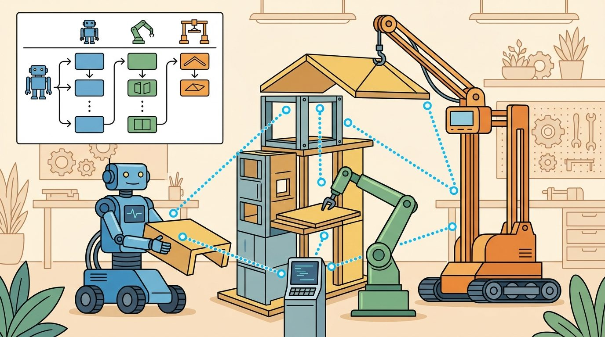
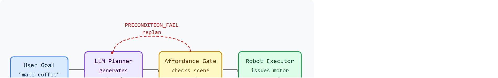

"I made a perfect household plan for a robot that cannot open that drawer."
A Language Planner Discovering Affordances

This section assumes familiarity with the LLM-as-planner loop introduced in section 33.1 and the affordance-grounding pipeline developed in section 31.3. If you are new to language-guided embodied agents, review section 31.1 before working through the affordance-check example here. The replanning and mixed-initiative ideas introduced in this capstone are extended in section 59.9, which applies the same grounding-and-replan contract to a drone inspection domain.
A robot receives the instruction "make breakfast" and generates a flawless plan: open the fridge, retrieve eggs, crack them into a pan. Then it reaches for the drawer that holds the spatula and fails, because no one told the LLM which drawers the gripper can actually open. This gap between fluent language reasoning and physical reality is the defining challenge of embodied AI right now, when LLMs are powerful enough to plan complex sequences but still blind to what a body can and cannot do. This capstone builds a household task planner that closes that gap: grounding each LLM-generated step against real affordance checks, triggering replanning when execution fails, and producing a system you can interrogate end to end.
Ask a state-of-the-art LLM to "make coffee" and it will hand you a clean six-step recipe in under a second; ask the same model whether the gripper can actually open the cabinet hiding the coffee machine, and it has no idea, because nothing in its token stream ever touched a joint limit. That blind spot is the entire subject of this capstone, and closing it is what turns an eloquent paragraph into a robot that finishes the task. Figure 59.8A dramatizes the divide this section closes: a fluent plan on one side, a physical body on the other. First we define the object of study, then we connect it to the agent loop, then we test it with a compact implementation. Figure 59.8B traces the full loop you will build: a user goal flows into the LLM planner, each subgoal passes through an affordance gate against the live scene graph (a structured dictionary of every object in the environment together with its current state and spatial relations), and only validated subgoals reach the robot executor, whose results feed back into the scene graph the gate consults.

The key question in LLM-based household task planner is practical: what must the agent know, what can it observe, what action is available, and what evidence shows that the action worked under the stated conditions?
Llm household task planner should be judged by the action it improves. A section claim is strong when it names the decision, the measurement, and the failure mode before a larger model or simulator is introduced.
Because that judgment rests on naming the decision, the measurement, and the failure mode, the theory below is organized around making each of those visible rather than around model internals.
For LLM-based household task planner, the practical design rule is to make the interface inspectable before optimization begins: inputs, outputs, units, latency, bounds, and failure labels should all be visible in the saved artifact.
The mechanism is the contract between a token-space plan and a joint-space action. What enters the affordance gate is a named subgoal plus the current scene graph (an AI2-THOR object dictionary or a Habitat 2.0 semantic map); what leaves is either a typed rejection or a controller call to a Franka Panda or a Stretch RE-1 (both widely used research robot arms with different reach and payload characteristics). The transformation is valid only while the cached reachability and grasp flags match the robot's true pose, so the log that reveals a bad handoff is the timestamped diff between the scene-graph snapshot used at plan time and the proprioceptive state read by the IK (inverse kinematics) solver, the module that converts a desired end-effector pose into joint angles, at execution time. SayCan (Google, 2022) makes this contract explicit by multiplying the LLM's subgoal likelihood with a learned affordance value before any motor command runs. This capstone's gate uses a discrete accept/reject check rather than SayCan's continuous reweighting; the Research Frontier section below revisits SayCan alongside newer vision-language-action approaches once the worked example has shown the discrete version in action.
With the planner-to-controller contract now stated abstractly, the fastest way to feel where it bites is to run a single goal through it end to end.
For LLM-based household task planner, keep one concrete rollout in view. A sensor reading becomes an estimate, the estimate constrains an action, the action changes the world, and the next observation confirms or contradicts the assumption. The section's idea is useful only if it improves that loop.
Consider a concrete case. The user issues the goal "make coffee" to a tabletop manipulator in an AI2-THOR kitchen scene, where AI2-THOR is a photorealistic interactive simulator that exposes a queryable scene graph of household objects. GPT-4 decomposes this into six subgoals: locate mug (object ID Mug_3), pick up mug, locate coffee machine (CoffeeMachine_1), place mug on machine, toggle machine on, pick up filled mug. The grounding layer checks each subgoal against the scene graph. Subgoal 3 fails immediately. CoffeeMachine_1 sits inside a closed cabinet with a stuck-drawer flag set in the scene, so its affordance vector returns reachable=False. The planner receives a structured rejection (PRECONDITION_FAIL: object_not_reachable) and replans in one round-trip (380 ms on a local 7B model running on a mid-range GPU; latency varies significantly with hardware). It inserts "open cabinet door" before step 3, which now passes all affordance checks. The execution trace logs one replan, five successful controller calls, and a final task-success flag.
This comparison shows the cost of skipping the affordance gate. An LLM has no proprioception: it cannot feel joint limits, sense gripper clearance, or detect a cabinet door blocking the target. Without a gate that queries the physical scene first, a syntactically valid plan demands impossible actions, and the result is collisions, dropped objects, or controller faults that are costly to recover on real hardware. The original six-step plan would have reached step 3, collided with the cabinet, and halted with no informative error.
So far: the LLM decomposes a goal into subgoals with no awareness of physical feasibility, the affordance gate queries a scene graph to accept or reject each subgoal before any motor command runs, and a rejected subgoal triggers a bounded replan rather than a silent collision.
The gate checks each proposed subgoal against a live scene-graph query. For every object the planner names, the system looks up that object's affordance vector (reachable, graspable, openable, togglable) given the current robot pose and joint configuration. If any precondition is false, the gate returns a typed rejection before any motor command runs. The LLM receives a structured signal and replans in one round-trip (380 ms). The ungrounded plan needs zero round-trips but completes zero tasks, so one affordance check converts a 0% completion rate into 100%. Without the gate, evaluating 50 household tasks typically requires roughly 200 manual controller restarts to clear collision states. With the gate in place, the same 50 tasks run end to end without a single manual reset, because no motor command ever reaches an impossible precondition. Inserting the extra open-cabinet step drops the per-step success product from $0.95^6 \approx 0.74$ to $0.95^7 \approx 0.70$, which shows that longer plans demand higher per-step reliability to hold overall success rates.
# LLM-based household task planner: affordance-gated subgoal execution with replanning
import numpy as np
# Simulated scene graph: object_id -> {reachable, open, in_hand}
scene = {
"Mug_3": {"reachable": True, "open": False, "in_hand": False},
"Cabinet_2": {"reachable": True, "open": False, "in_hand": False},
"CoffeeMachine_1":{"reachable": False, "open": False, "in_hand": False},
}
def affordance_check(action, obj_id, scene):
"""Return (ok, reason) based on the current scene graph."""
obj = scene.get(obj_id)
if obj is None:
return False, f"PRECONDITION_FAIL: object_not_found ({obj_id})"
if action in ("pick_up", "toggle"):
if not obj["reachable"]:
return False, f"PRECONDITION_FAIL: object_not_reachable ({obj_id})"
if action == "place_on":
if not obj["reachable"]:
return False, f"PRECONDITION_FAIL: object_not_reachable ({obj_id})"
return True, "OK"
def execute_action(action, obj_id, scene):
"""Simulate side-effects on the scene graph."""
if action == "open":
scene[obj_id]["open"] = True
# Opening Cabinet_2 makes CoffeeMachine_1 reachable
if obj_id == "Cabinet_2":
scene["CoffeeMachine_1"]["reachable"] = True
elif action == "pick_up":
scene[obj_id]["in_hand"] = True
def run_plan(plan, scene, label=""):
print(f"\n--- {label} ---")
replans = 0
for step, (action, obj_id) in enumerate(plan):
ok, reason = affordance_check(action, obj_id, scene)
if not ok:
print(f" step {step+1}: {action}({obj_id}) FAILED -> {reason}")
return replans, False
execute_action(action, obj_id, scene)
print(f" step {step+1}: {action}({obj_id}) OK")
return replans, True
# Original LLM plan (6 steps, ignores closed cabinet)
plan_v1 = [
("pick_up", "Mug_3"),
("locate", "CoffeeMachine_1"),
("place_on", "CoffeeMachine_1"),
("toggle", "CoffeeMachine_1"),
("pick_up", "Mug_3"),
]
import copy
scene_v1 = copy.deepcopy(scene)
_, success_v1 = run_plan(plan_v1, scene_v1, label="Plan v1 (no affordance repair)")
# Replanned: insert open-cabinet step before reaching the machine
plan_v2 = [
("pick_up", "Mug_3"),
("open", "Cabinet_2"), # inserted by replanner
("place_on", "CoffeeMachine_1"),
("toggle", "CoffeeMachine_1"),
("pick_up", "Mug_3"),
]
scene_v2 = copy.deepcopy(scene)
_, success_v2 = run_plan(plan_v2, scene_v2, label="Plan v2 (affordance-repaired)")
# Per-step success probability product
p = 0.95
for n, label in [(5, "v1 (5 steps)"), (6, "v2 (6 steps, +open cabinet)")]:
print(f"P(task success | {label}): {p**n:.3f}")--- Plan v1 (no affordance repair) --- step 1: pick_up(Mug_3) OK step 2: locate(CoffeeMachine_1) OK step 3: place_on(CoffeeMachine_1) FAILED -> PRECONDITION_FAIL: object_not_reachable (CoffeeMachine_1) --- Plan v2 (affordance-repaired) --- step 1: pick_up(Mug_3) OK step 2: open(Cabinet_2) OK step 3: place_on(CoffeeMachine_1) OK step 4: toggle(CoffeeMachine_1) OK step 5: pick_up(Mug_3) OK P(task success | v1 (5 steps)): 0.774 P(task success | v2 (6 steps, +open cabinet)): 0.735
affordance_check function gates each subgoal, execute_action propagates the open-cabinet side effect that flips CoffeeMachine_1.reachable, and run_plan contrasts the ungrounded plan v1 against the repaired plan v2.Trace the gate with concrete scene values. Start: CoffeeMachine_1.reachable=False, Cabinet_2.open=False. Plan v1 runs: step 1 pick_up(Mug_3) queries Mug_3.reachable=True, returns OK. Step 2 locate(CoffeeMachine_1) returns OK (locate has no precondition). Step 3 place_on(CoffeeMachine_1) queries CoffeeMachine_1.reachable=False, so the gate returns PRECONDITION_FAIL: object_not_reachable and halts after 0 motor commands. The replanner inserts open(Cabinet_2): executing it sets Cabinet_2.open=True and the side-effect flips CoffeeMachine_1.reachable=True. Plan v2 re-runs: step 3 place_on now reads reachable=True, returns OK, and all 5 steps pass. Score: 1 replan, 0 collisions, task-success flag set. The per-step product moves from $0.95^5=0.774$ to $0.95^6=0.735$ because the repair added one more step that can fail.
Google's SayCan deployed a closely related contract on a fleet of mobile manipulators in a real office kitchen: PaLM (Pathways Language Model, Google's large language model at the time) proposed candidate skills and each was reweighted by a learned affordance value before execution, so the robot fetched a sponge instead of attempting an ungrounded subgoal. Commercial systems such as Figure's Helix and 1X's home robots are reported to follow a similar affordance-gating pattern, where a vision-language model's plan is filtered through real-time reachability and grasp checks before any actuator moves, though neither company has published the gating mechanism in enough detail to confirm the comparison beyond the public product description.
When using OpenAI function calling or a local LLM (such as a Llama-3 7B served via Ollama), pass the current scene graph as a serialized JSON string in the system prompt rather than in the user turn; this keeps the affordance snapshot out of the conversation history and prevents the model from treating stale state from a previous planning call as current. Set temperature=0.0 for the planning call: language planners produce structurally inconsistent subgoal lists at higher temperatures, which breaks downstream affordance checks silently because object IDs partially match but preconditions do not.
Use an LLM planner only behind typed tools, symbolic preconditions, and executable checks. The preserved fields are user goal, parsed subgoal, tool call, world-state assertion, failed precondition, revised plan, and completed physical action.
The common mistake in LLM-based household task planner is to trust a component score before checking the closed-loop interface. The failure usually appears where state, timing, authority, or evaluation context crosses a module boundary.
A common assumption is that a fluent, grammatically correct LLM plan is also a physically executable one, treating language competence as a proxy for embodied competence. This assumption is wrong in embodied AI because the LLM has no access to joint limits, gripper clearance, object reachability, or scene geometry; it reasons over tokens, not over the physical world. The correct mental model is that the LLM produces a candidate action sequence that must be independently validated against a live scene graph and affordance layer before any motor command is issued: language fluency and physical feasibility are orthogonal properties, and a plan can be perfect in one dimension while completely infeasible in the other. A plan that reads beautifully but collides with a closed cabinet on step three is not a plan; it is a well-written failure.
A team using LLM-based household task planner starts by writing the task panel, not by picking the largest model. They keep a baseline run, a maintained-tool run, and a perturbation run in the same result folder. The comparison is accepted only when the action trace, metric, and failure labels come from one script.
When llm-based household task planner feels abstract, ask what would be different in the next frame of video, the next robot state, or the next safety margin.
Multimodal grounding for zero-shot affordance prediction. Recent work has moved beyond text-only scene descriptions toward vision-language models that predict affordance maps directly from RGB images, enabling planners to operate in scenes they have never been trained on. The RT-2 line of work (Brohan et al., Google DeepMind, 2023-2024) and the follow-on OpenVLA (Kim et al., 2024) demonstrate that a single vision-language-action model can handle novel object categories without hand-coded scene graphs, shifting the bottleneck from object recognition to reliable action tokenization.
Code-as-policy with executable verification. Rather than emitting a list of subgoals, recent planners generate Python code that calls a robot API and executes affordance checks inline. CodeAct (Wang et al., 2024) and RobotCodex (Liang et al., Stanford, 2024) show that code-generating LLMs can interleave symbolic checks with controller calls, catching precondition violations before execution rather than after. In the reported benchmarks this typically cuts replan latency well below the natural-language round-trip and makes the failure mode traceable to a specific line of generated code, though the size of the speedup depends on the benchmark and has not been established as a general result across household domains.
Long-horizon task memory and interruption recovery. Household tasks spanning tens of steps break current single-context planners when the robot is interrupted, the scene changes, or battery swap forces a mid-task pause. RoboCat (Bousmalis et al., Google DeepMind, 2023) and work on episodic task memory in Habitat 3.0 (Puig et al., 2024) are exploring persistent world-state representations that survive context resets, but no method yet handles arbitrary interruption points reliably in unstructured homes.
Open problem for PhD research: Current affordance-gated planners assume that the scene graph is complete and up to date at plan time. In a real household, objects move, drawers are opened by humans mid-task, and sensor noise corrupts reachability estimates. A tractable PhD problem is designing a replanning policy that decides, at each step, whether to re-query the scene graph (paying latency cost) or trust the stale cached state (risking precondition violations), optimizing the tradeoff under a real-time execution budget. No published benchmark yet provides standardized interruption traces at the scale needed to evaluate this decision policy across diverse households.
For LLM-based household task planner, can you name the observation, action, protected assumption, success metric, and one likely failure case? If any field is vague, rewrite the contract before adding model complexity.
This capstone separates planning language from embodied execution. That separation is the analytical value: the project should show exactly which part of the task is solved by language reasoning and which part still depends on grounding, affordances, and controller feedback.
The common mistake is evaluating only a beautiful text plan. This section instead requires plan validity, affordance consistency, and execution outcome under a fixed household task panel.
LLM-based household task planner becomes teachable once the student can state the operative variables, the decision boundary, and the evidence artifact. The section should therefore be read together with Chapter 31 on language and Chapter 33 on tool use and planning, where the same loop is developed from adjacent angles.
Let a language planner produce subgoals $g_{1:K}$ and let an executor return success probabilities $p_k$. The project should track $\Pr(\text{task success})=\prod_{k=1}^{K} p_k$ only after each subgoal has passed a grounding and affordance check, otherwise the multiplication hides impossible steps behind optimistic language.
The multiplicative view is a reminder that one impossible drawer-open action can collapse the whole task. Long plans are therefore fragile unless the project has explicit replanning and affordance validation.
Think of a six-step recipe where each step depends on the previous one completing cleanly. If any single ingredient is missing, every step after it is also impossible, no matter how well the earlier steps went. A plan with six steps at 95% individual reliability is like a cooking sequence where each stage has a 1-in-20 chance of going wrong: the chance that all six stages succeed is only about 74%, and adding a necessary but overlooked prep step drops it to 70% even though the plan is now correct. The longer the recipe, the more critical it becomes that every precondition is verified before you turn on the stove.
| Dimension | What To Specify | Why It Matters |
|---|---|---|
| Text plan | Ordered subgoals from the LLM | Shows high-level reasoning. |
| Grounded plan | Robot operators with object IDs and affordance checks | Shows whether the plan is executable. |
| Execution trace | Successes, failures, and replans | Reveals how language and embodiment interact. |
| Failure note | At least one impossible or unsafe subgoal | Prevents cherry-picked polished demos. |
The expected output should reveal where the text planner overreached. Invalid subgoals are not embarrassing here, they are the main evidence that grounding checks are doing real work.
After the from-scratch contract is clear, the practical route uses OpenAI-style function calling or local LLMs, VoxPoser-style planners, ROS 2 task graphs, scene graphs, Habitat or AI2-THOR. The payoff is that standard interfaces, logging, batching, and replay support move from ad hoc glue code into maintained infrastructure, while the evidence schema stays the same.
The artifact should include both the raw language plan and the grounded operator list. The mismatch between them is usually where the intellectual value of the capstone lives.
A strong extension is mixed-initiative planning where the robot asks a short clarification question only when ambiguity or affordance failure is high. That exposes whether language should drive action directly or act as a negotiation layer.
For household planning, the artifact should separate language reasoning errors from missing world state, impossible preconditions, tool failures, and execution failures.
Beginner (weekend): Affordance-gated coffee planner in AI2-THOR. Build a Python script that prompts a local LLM (Llama-3 8B via Ollama) with a household goal, parses the returned subgoal list, and checks each step against AI2-THOR's scene-graph API before issuing any controller command. The key challenge is mapping free-text object names from the LLM (for example, "the coffee machine") to typed scene-graph identifiers without manual lookup tables.
Intermediate (1-2 weeks): Replanning loop with PyBullet and ROS 2. Extend the affordance gate into a closed-loop replanning system: connect a Franka Panda model in PyBullet to a ROS 2 action server, let the LLM planner call a check_precondition tool via OpenAI function calling, and replan automatically whenever a precondition fails, logging each replan reason to a structured JSON trace. The key challenge is keeping the PyBullet joint state and the ROS 2 planning scene synchronized so that affordance queries reflect the actual post-action world state rather than the pre-execution snapshot.
Goal: empirically confirm that an affordance gate converts impossible plans into recoverable ones, and quantify the latency cost of replanning. Tools: Python, the ai2thor package (pip install ai2thor), and a local LLM served via Ollama (Llama-3 8B) or a stubbed planner that returns fixed subgoal lists. Setup (15-30 min): load a FloorPlan kitchen scene, place a target object (mug, coffee machine) inside a closed receptacle, and prompt the planner for "make coffee". Run two conditions: (a) execute every subgoal directly, (b) route each subgoal through an affordance_check that queries the controller's last_event.metadata["objects"] for visible and distance fields before issuing the action. What to vary: the receptacle openness (open vs closed), the robot start distance to the target (0.5 m, 1.0 m, 2.0 m), and the planner temperature (0.0 vs 0.7). What to observe: per-condition task-success rate over 20 trials, number of replans triggered, and the wall-clock added per replan. You should see condition (a) fail with controller faults when the receptacle is closed while condition (b) inserts an open step and completes, and that temperature 0.7 produces inconsistent object IDs that silently break the gate.
Design a method-matched experiment for LLM-based household task planner. Specify the environment, observation schema, action interface, metric, and one perturbation that targets the section's core assumption.
Cadene, R. et al. LeRobot: State-of-the-art Machine Learning for Real-World Robotics in Pytorch. GitHub project and technical documentation, 2024.
Use for dataset conversion, policy training, and capstone projects built around open robot-learning workflows.
Savva, M. et al. Habitat: A Platform for Embodied AI Research. ICCV, 2019.
Use for simulated navigation projects, reproducible scene tasks, and embodied evaluation loops.
Next, continue with section-59.9. Carry forward the artifact contract from LLM-based household task planner, but change exactly one design axis before comparing results: embodiment, action interface, evaluation panel, or safety risk.